Gestion des Tickets¶
Ticket¶
Un Ticket est un type de tâche qui ne peut pas être planifié de manière unitaire.
Il s’agit généralement d’une Activité de courte durée pour un seul Ticket qui fournit un retour à l’émetteur ou permet de suivre le résultat.
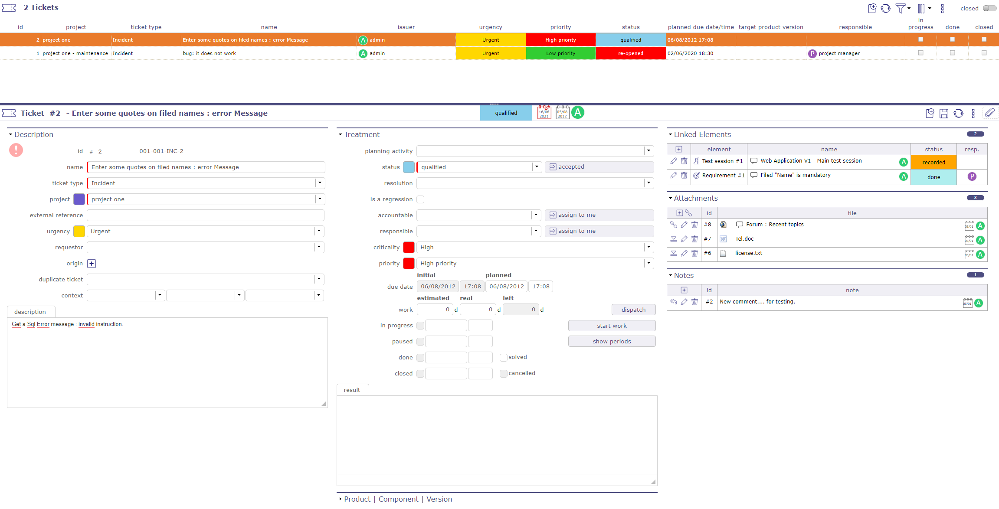
Écran de gestion des Tickets¶
Il peut être planifié globalement comme une Activité générale, mais pas de manière unitaire.
Par exemple, les bogues doivent être gérés via des Tickets :
Vous ne pouvez pas planifier des bogues avant qu’ils soient enregistrés.
Vous devez être en mesure de donner un retour sur chaque bogue.
Vous pouvez planifier globalement l’Activité de correction de bogues.
Astuce
Possibilité de définir que seul le responsable du Ticket peut saisir le travail réel.
Ce comportement peut être défini dans l’écran Paramètres globaux.
Dates
Dates d’échéance
La date d’échéance initiale et planifiée permet de définir une date cible pour la résolution du Ticket.
Si une définition de délai pour un Ticket existe, la date planifiée initiale est automatiquement calculée avec ce délai.
Voir aussi
L’écran Délais pour les tickets permet de définir le délai du Ticket.
Date d’échéance planifiée
Sert à définir une date cible après évaluation.
Initialisée automatiquement à la date d’échéance initiale.
Indicateur de suivi
Possibilité de définir des indicateurs pour suivre le respect des valeurs de dates.
Champs Produit, composant et versions
Permet d’identifier le produit et le composant liés au problème.
Identifie à partir de quelles versions le problème survient et à quelles versions une résolution sera appliquée.
Versions identifiées
Un Ticket peut identifier toutes les versions affectées.
Possibilité de définir une version principale et les autres versions affectées.
Voir aussi
Responsable du produit
Un responsable peut être défini pour un produit ou un composant.
Si un produit ou un composant est sélectionné, le responsable défini peut être automatiquement assigné au Ticket.
Astuce
Le responsable du Ticket issu du responsable du produit, dans les Paramètres globaux, permet de définir si le responsable défini est automatiquement assigné au Ticket.
Version produit d’origine & Version composant d’origine
La liste de valeurs sera filtrée en fonction de la valeur sélectionnée dans les champs « Produit et composant ».
Cliquez sur
 pour ajouter une autre version, voir Sélection multi-versions.
pour ajouter une autre version, voir Sélection multi-versions.
Section Traitement
Champ |
Description |
|---|---|
Activité de planification |
Activité dans laquelle le travail global pour ce type de Ticket est planifié. |
|
Statut actuel du Ticket. |
Résolution |
Résolution du Ticket. |
Régression |
La notion de régression peut être ajoutée. |
Ressource responsable du Ticket. |
|
Criticité |
Importance de l’impact sur le système, telle que déterminée après analyse. |
Priorité |
Priorité de traitement. |
Date d’échéance initiale |
Date cible initiale pour la résolution du Ticket. |
Date d’échéance planifiée |
Date cible actuelle pour la résolution du Ticket. |
Travail estimé |
Charge de travail estimée nécessaire pour traiter le Ticket. |
Travail réel |
Charge de travail réelle dépensée pour traiter le Ticket. |
Travail restant |
Charge de travail restante nécessaire pour terminer le Ticket. Calculée automatiquement comme Estimé – Réel. Mise à zéro lorsque le Ticket est terminé |
Case cochée indique que le Ticket est pris en charge. |
|
Case cochée indique que le Ticket a été traité. |
|
Résolu |
Case cochée indique que le Ticket a été résolu. |
Clos |
Case cochée indique que le Ticket est archivé. |
Résolu |
La case est automatiquement cochée ou décochée, selon la résolution sélectionnée |
Annulé |
Case cochée indique que le Ticket est annulé. |
Version produit cible |
Versions du produit pour lesquelles une résolution du problème sera fournie. |
Version composant cible |
Versions du composant pour lesquelles une résolution du problème sera fournie. |
Description complète de la résolution du Ticket. |

Note
La Priorité est automatiquement calculée à partir des valeurs d’Urgence et de Criticité. Elle peut être modifiée manuellement
Voir aussi
Note
Version produit cible & Version composant cible
La liste de valeurs sera filtrée en fonction de la valeur sélectionnée dans les champs « Produit et composant ».
Cliquez sur
pour ajouter une autre version, voir Sélection multi-versions.
Bouton Démarrer/Arrêter le travail
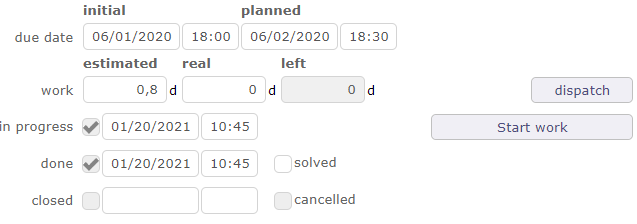
Le bouton Démarrer le travail / Arrêter le travail est un minuteur marche/arrêt.
Si l’utilisateur connecté est une Ressource, il ou elle a la possibilité de commencer à travailler sur le Ticket.
Cliquez sur le bouton « Démarrer le travail » pour commencer à chronométrer le temps de traitement du Ticket.
L’heure de début est alors affichée sous le bouton et le bouton change de nom.
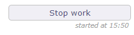
Une fois le travail terminé, appuyez sur le bouton « Arrêter le travail ».
Le temps passé sera automatiquement converti en travail réel.
Il sera transféré sur l’Activité de planification si elle est définie.
Une diminution du « travail restant » sur l’Activité sera effectuée.
Si le Ticket passe à l’état en pause, le travail démarré avec le bouton de démarrage sera arrêté.
Important
La fermeture de l’application ou le démarrage d’un travail sur un autre Ticket arrêtera automatiquement le travail en cours.
Bouton Répartir
Ce bouton permet de répartir le Ticket.
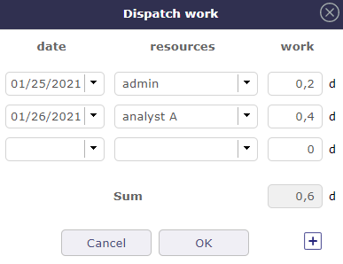
Cliquez sur
pour ajouter une ligne.
Bouton Afficher les périodes
Vous pouvez calculer le temps passé entre le début du traitement, qui correspond à la réception du Ticket et la fin du traitement d’un Ticket, c’est-à-dire lorsqu’il passe à l’état terminé, avec la possibilité de soustraire les périodes d’attente grâce à la macro d’état « en pause ».
Les passages d’un macro-état actif à un macro-état non actif (en pause ou terminé) sont enregistrés grâce aux dates de début et de fin de chaque période. Ce tableau est mis à jour automatiquement avec le calcul de la durée en heures ouvrées et la durée en heures calendaires lorsque la date de fin de la période est saisie.
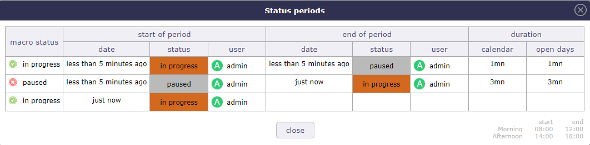
Période de statut¶
Activité de planification¶
Le champ Activité de planification permet de lier le Ticket à une Activité de planification.
Si le paramètre global limiter l’Activité de planification à celles avec indicateur est défini sur oui, alors :
Vous devez cocher la case « Activité de planification » sur l’Activité à lier.
Elle sera alors visible dans la liste des Activités de planification de votre Ticket.
Le travail sur le Ticket sera inclus dans cette Activité.
Après l’enregistrement de l’option, de nouveaux champs sont affichés.
Vous pouvez voir le nombre de Tickets liés à cette Activité et les informations de temps correspondant à tous ces Tickets.
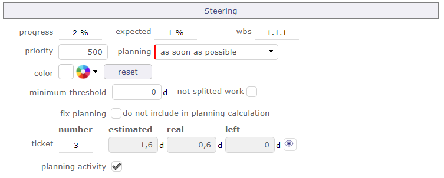
Nouveaux champs affichés après l’enregistrement de l’option Activité de planification¶
Cliquez sur
 pour ouvrir une fenêtre contextuelle qui affichera le détail de ces Tickets.
pour ouvrir une fenêtre contextuelle qui affichera le détail de ces Tickets.
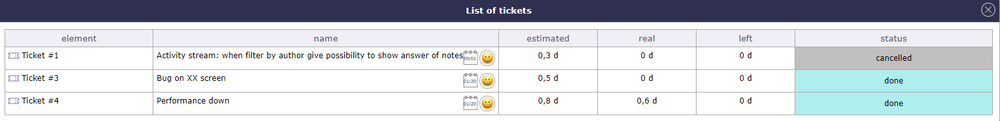
Liste des Tickets liés à l’Activité¶
Travail réel
Reporter le travail réel des Tickets vers les Imputations de la Ressource.
Lorsqu’une Ressource a saisi le travail réel sur le Ticket et que le Ticket est lié à une Activité de planification.
La Ressource est automatiquement assignée à cette Activité.
Le travail réel saisi sur les Tickets est automatiquement reporté dans les Imputations de la Ressource.
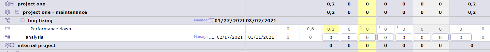
Imputations du travail réel sur les Tickets associés.¶
Les Tickets sont très dépendants de l’Activité de planification.
Une affectation et une charge doivent être correctement saisies sur l’activité de planification pour que l’affichage des tickets dans les imputations soit cohérent.
Le temps indiqué par les Ressources sera décrémenté de celui planifié pour l’Activité.
Voir aussi
Sélection multi-versions¶
Dans les champs de version, il est possible de définir plusieurs versions.
Cliquez sur
pour ajouter une autre version.Cliquez sur
 pour supprimer une version.
pour supprimer une version.
Calcul de la valeur de priorité¶
La valeur de priorité est automatiquement calculée à partir des valeurs d”Urgence et de Criticité.
Les valeurs de Priorité, d’Urgence et de Criticité sont définies dans les écrans des listes de valeurs. Voir : écrans Priorités, Urgences et Criticités.
Dans les écrans précédents, un nom de valeur est défini avec une valeur numérique.
La valeur numérique de la priorité est déterminée par une équation simple comme suit :
Valeurs par défaut
Les valeurs par défaut sont déterminées.
Vous pouvez modifier ces valeurs tout en respectant l’équation définie ci-dessus.
Boîte mail pour les Tickets¶
ProjeQtOr propose d’enregistrer les Tickets depuis les e-mails directement dans l’application.
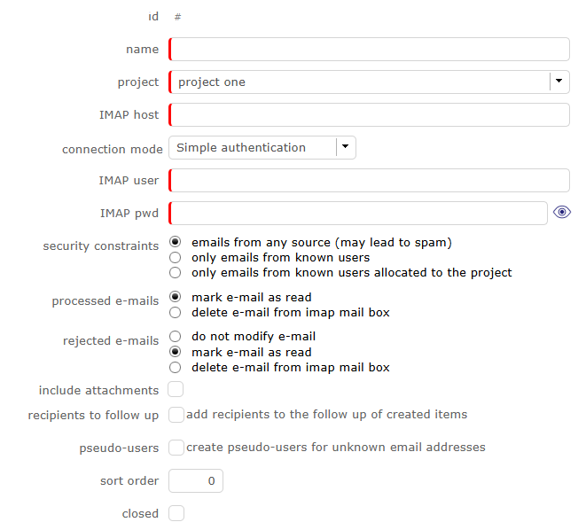
Recevoir des e-mails depuis l’écran des Tickets¶
Vous pouvez créer de nouvelles boîtes mail pour les Tickets sur les projets et pour chaque type de Ticket configuré dans ProjeQtOr.
Configuration¶
Hôte IMAP
Vous choisissez le mode de connexion entre une connexion simple ou une connexion sécurisée avec oAuth2.
L’adresse doit être une chaîne de connexion IMAP.
Exemple pour se connecter à la boîte de réception GMAIL, l’hôte doit être
{imap.gmail.com:143}INBOX
Aucun protocole n’est requis
Astuce
Si les certificats sont auto-signés, vous pouvez tester l’ajout de novalidate-cert dans votre adresse
{imap.gmail.com:143/novalidate-cert}INBOX
Contraintes de sécurité
E-mails de toute source (peut entraîner du spam)
Vous permet de recevoir des e-mails de n’importe qui et peut donc entraîner du spam
Uniquement les e-mails d’utilisateurs connus
Ne peut recevoir que les e-mails enregistrés dans votre application ProjeQtOr
Uniquement les e-mails d’utilisateurs connus affectés au projet
Vous permet uniquement de recevoir les e-mails enregistrés dans votre application ProjeQtOr et qui sont assignés au projet sélectionné dans les paramètres de votre boîte mail
E-mails traités
Marquer l’e-mail comme lu
Tous les e-mails authentifiés et conformes aux contraintes définies sont acceptés et marqués comme lus.
Supprimer l’e-mail de la boîte IMAP
Tous les e-mails qui ne sont pas correctement authentifiés et qui ne répondent pas aux contraintes définies sont définitivement supprimés de la boîte IMAP.
E-mails rejetés
Ne pas modifier l’e-mail
Un e-mail est rejeté lorsqu’il ne répond pas aux critères de configuration de votre boîte mail. Ne pas modifier l’e-mail est une option qui ne déclenchera ni suppression ni marquage.
L’e-mail rejeté reste non lu.
Marquer l’e-mail comme lu
L’e-mail rejeté est marqué comme lu.
Supprimer l’e-mail de la boîte IMAP
L’e-mail rejeté est définitivement supprimé de la boîte IMAP.
Autres contraintes
Inclure les pièces jointes
Indique si vous autorisez ou non vos utilisateurs à joindre des pièces jointes.
Destinataires à suivre
Inclure systématiquement l’expéditeur et les destinataires de l’e-mail dans le suivi du Ticket créé ou de la note ajoutée par cet e-mail.
Cela inclut les destinataires principaux (sauf celui correspondant à la boîte de réception) et les destinataires en copie.
Pseudo-utilisateurs
Autoriser l’envoi depuis des utilisateurs inconnus et conserver une trace des e-mails de l’expéditeur et les copier.
Entraîne la création d’utilisateurs fictifs.
Avertissement
Il n’y a pas de limite de taille dans ProjeQtOr, mais probablement sur votre serveur de messagerie.
La plupart du temps, les e-mails sont bloqués au-delà de 5 à 10 Mo
Ordre de tri
En cas de plusieurs boîtes mail sur un seul projet, l’ordre de traitement des boîtes est important car c’est toujours en ordre croissant que les boîtes mail gèrent les Tickets entrants.
Important
CRON
Le Cron doit être lancé pour que les Tickets soient traités dans ProjeQtOr. Si vous ne recevez pas de Ticket, essayez d’arrêter le cron afin qu’il puisse redémarrer avec un rafraîchissement du code.
Limite de Tickets / heure
Cette limite vous permet de restreindre la réception des e-mails par heure.
Si le nombre de Tickets reçus est bien supérieur à votre limitation, la probabilité de spam est à considérer ou vous avez mal évalué le nombre de Tickets à traiter.
Lorsque le nombre maximum de Tickets est atteint, la boîte mail se bloque
Seule une intervention manuelle de l’administrateur peut la débloquer
Son rôle consistera à réévaluer le nombre de Tickets pour permettre leur réception
Important
Si le nombre maximum de Tickets par heure a été atteint, vous avez un message de rejet sur la ligne d’historique Ticket rejeté : limite de Tickets par heure
Note sur un ticket, changement de statut vers… avec condition
Vous pouvez configurer le changement de statut d’un Ticket entrant lorsqu’une note lui est ajoutée.
Par exemple, si j’ajoute une note à un Ticket dans cette boîte mail, le Ticket passera au statut accepté.
Si la condition si le ticket est clos est remplie, le Ticket sera automatiquement rouvert en plus du changement de statut.
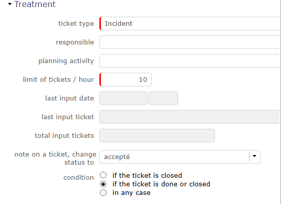
Historique des Tickets créés
Vous pouvez choisir le nombre de Tickets à afficher dans l’historique en renseignant le champ « historique à afficher »
Réponses par e-mail¶
L’utilisation de la boîte mail pour les nouveaux Tickets est identique pour les réponses.
La référence de l’élément depuis lequel l’e-mail est envoyé est ajoutée dans l’objet de l’e-mail.
Dans la procédure de détermination de l’origine d’un e-mail entrant, ProjeQtOr recherche la référence dans l’objet de l’e-mail.
Si elle n’est pas trouvée
ProjeQtOr le considère comme une nouvelle demande à intégrer comme nouveau Ticket.
Si la référence est trouvée dans l’objet de l’e-mail entrant
Lors de la réception d’une réponse à un e-mail envoyé par ProjeQtOr, la réponse est insérée sur l’élément sous forme de note avec une option pour inclure les pièces jointes dans les fichiers attachés.
oAuth2 pour IMAP¶
L’objectif est de permettre la connexion aux boîtes IMAP via l’authentification oAuth2, pour la « Boîte mail d’entrée pour les Tickets ». Cela permet la connexion aux boîtes Office 365.
Avec oAuth2, le protocole permet l’acquisition des identifiants client comme méthode de connexion.
Cette méthode ne nécessite aucune interaction humaine. Lors de la déclaration du client, il sera nécessaire de définir correctement qu’il dispose de tous les droits nécessaires pour traiter les messages des boîtes IMAP utilisées, tels que :
Lister les messages non lus,
Marquer les messages comme lus,
Supprimer les messages.
Gestion des e-mails traités
Dans les paramètres globaux, vous pouvez déterminer, à la réception de l’e-mail, si vous souhaitez le marquer comme lu ou le supprimer.
Réception de Tickets multi-projets
Vous pourrez recevoir tous les Tickets de différents clients sur une seule boîte IMAP.
Vous définissez plusieurs configurations sur la même boîte IMAP avec des contraintes sur l’existence de l’expéditeur et son affectation au projet concerné.
Vous définissez une configuration sur la boîte IMAP qui n’a aucune contrainte ou seulement une contrainte sur l’existence de l’expéditeur
Vous définissez l’ordre dans lequel les configurations sont traitées pour vous assurer que la configuration la plus permissive est traitée en dernier.
Important
Attention, vous devrez veiller à disposer d’une configuration « finale » qui marquera comme lus ou supprimera les e-mails qui ne sont pas correctement traités. Sinon, la boîte IMAP accumulera un nombre croissant d’e-mails qui seront retraités (et rejetés) par toutes les configurations à chaque cycle séquencé de lecture des boîtes IMAP. Cela ne sera pas contrôlé par le système.
Tableau de bord des Tickets¶
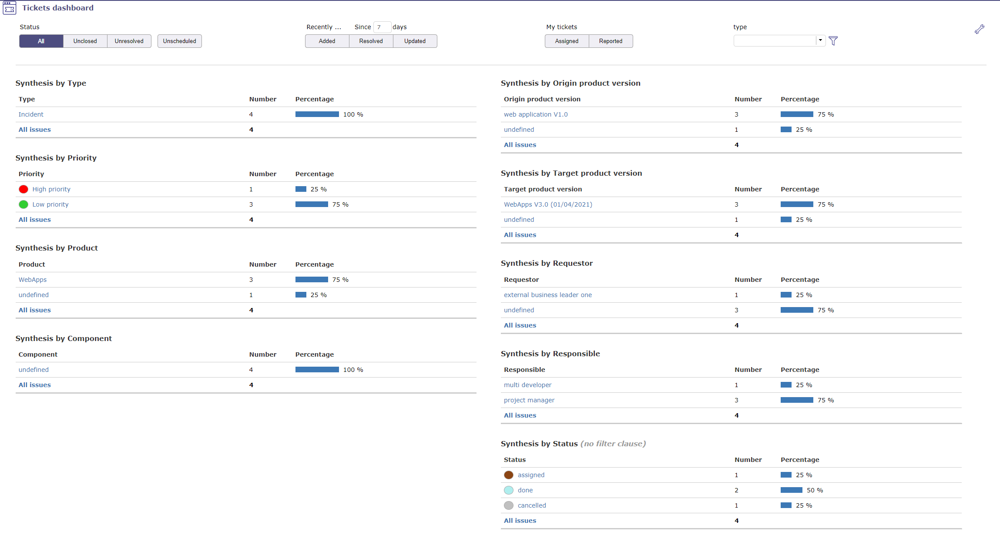
Permet à l’utilisateur d’avoir une vue globale des Tickets de ses projets.
Affiche plusieurs petites synthèses qui regroupent les Tickets par catégorie : type, priorité ou par produit, composant ou par état.
Le nombre de Tickets est listé. Le résultat est affiché avec des chiffres et en pourcentage.
Des filtres sont disponibles pour limiter la portée.
Accès direct à la liste des Tickets
Dans les différentes synthèses, cliquez sur un élément pour obtenir la liste des Tickets correspondant à cet élément.
Vous revenez à l’écran des Tickets
Paramètres
Cliquez sur
 pour accéder aux paramètres.
pour accéder aux paramètres.Permet de définir les Rapports affichés à l’écran.
Utilisez
 pour réorganiser les Rapports affichés.
pour réorganiser les Rapports affichés.Pour la synthèse par statut, les clauses de filtre ne sont pas applicables.
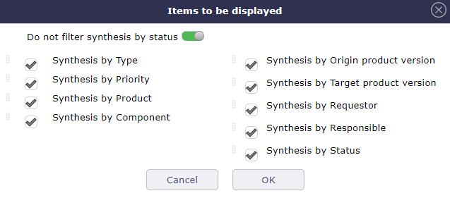
Filtres
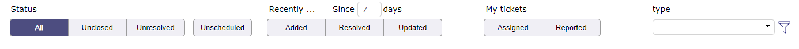
Filtres¶
Les filtres vous permettent de restreindre l’affichage des Exigences sauvegardées
Filtres de portée
Par statut, période, durée, élément clos, lié à l’utilisateur ou sans relation…
Aucune résolution planifiée
Non planifié : Exigences dont la résolution n’est pas planifiée dans une prochaine version du produit (version produit cible non définie).
Gestion des Tokens sur les Tickets¶
Vous pouvez définir et intégrer des Tokens sur les Tickets que vous pouvez suivre sur vos contrats clients.
L’utilisation de cette fonctionnalité est configurable et doit être activée dans la gestion des modules pour y avoir accès.
Un nouvel écran pour la définition des Tokens sera accessible via le menu revenus de la partie financière.
Définition des Tokens¶
L’objectif est de définir tous les types de Tokens susceptibles d’être commandés par votre client.
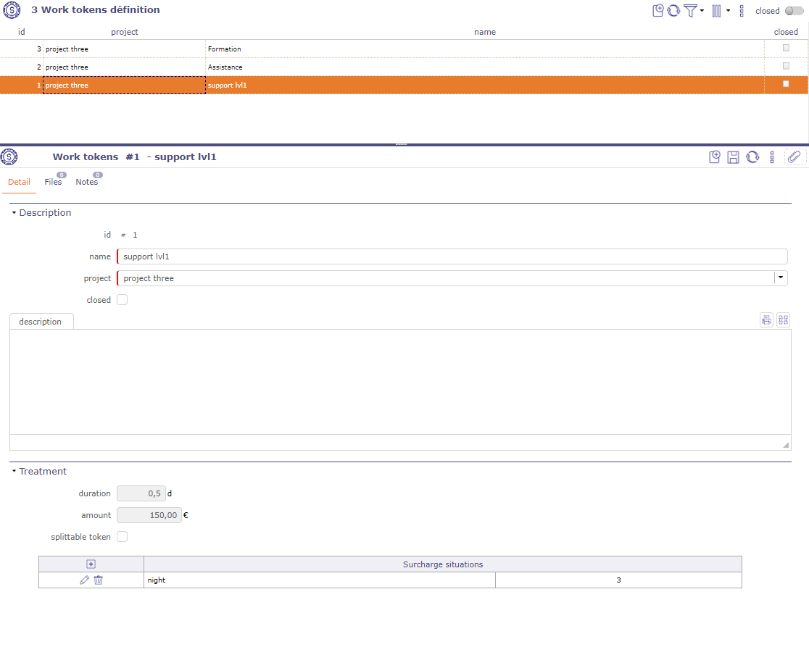
Écran de définition des Tokens¶
Vous définissez des valeurs pour un Token.
Durée
Valeur du Token en jours ou en heures (selon l’unité d’enregistrement du temps dans les paramètres globaux)
Montant
Valeur monétaire du Token en € (selon l’unité de devise dans les paramètres globaux)
Token divisible
Définit si le Token peut être divisible, si des demi-Tokens peuvent être saisis
Situations de majoration
Saisissez des situations de majoration pouvant s’appliquer aux Tokens, comme le travail de nuit, ou même pendant des jours normalement non travaillés
Avertissement
Lorsqu’un Token a été utilisé sur un Ticket, il devient impossible de le modifier.
De même, il n’est pas possible de supprimer ou de modifier le coefficient pour une situation de majoration utilisée sur une ligne de travail
Token sur le contrat client¶
Sur le contrat client, nous ajouterons un tableau avec des fonctions de gestion des commandes.
Cliquez sur
pour ajouter des Tokens à la commande
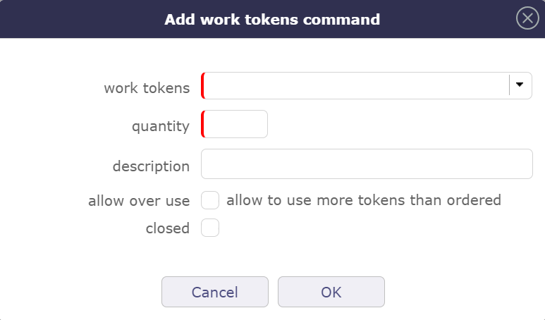
Ajouter une commande de Token de travail¶
Sélectionnez le type de Token parmi ceux définis sur le projet ou ses projets parents.
Saisie de la quantité de Tokens commandés
Ajouter un commentaire descriptif
Choisir si vous pouvez dépasser la quantité de Tokens sur la commande.
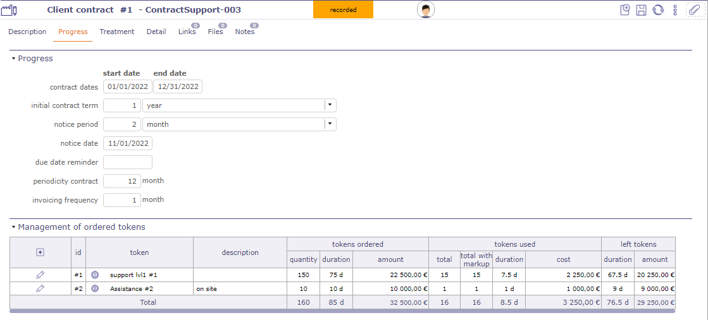
Gestion des Tokens commandés¶
Lorsque vous avez saisi la commande, le tableau indiquera :
Dans la section des Tokens commandés
Le type de Tokens commandés et sa description
Le montant total des Tokens commandés
La durée totale à laquelle correspond le nombre de Tokens
Le montant total auquel correspond le nombre de Tokens commandés
Dans la partie des Tokens utilisés
Le nombre total de Tokens utilisés sans majorations
Le nombre total de Tokens utilisés avec majoration
La durée totale des Tokens utilisés avec et sans majorations
Le coût total des Tokens utilisés en tenant compte des majorations
Dans la partie des Tokens restants
Affichage de la durée restante des Tokens (durée commandée - durée utilisée)
Affichage du nombre de Tokens restants (montant commandé - montant utilisé)
La Ligne Total additionne les nombres, montants et durées (commandés, réalisés, restants) pour tous les types de Tokens du contrat
Token sur les Tickets¶
Lorsque vous créez un Ticket sur le projet où les Tokens ont été définis, vous pourrez sélectionner ces Tokens lors de la répartition du travail.
Vous pouvez récupérer ces Tokens d’un projet parent.
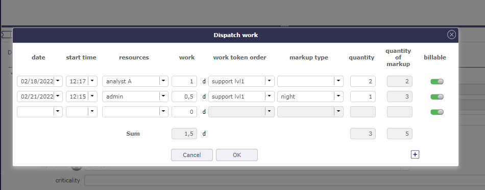
Répartir le travail avec sélection des Tokens¶
Cliquez sur
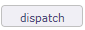
pour ouvrir la fenêtre contextuelle.La date et l’heure de début sont automatiquement renseignées avec les dates et heures actuelles.
Sélectionner la Ressource travaillant sur le Ticket
Ajouter la charge de travail pour ce Ticket
Sélectionner le Token correspondant au besoin du Ticket
Déterminer si un type de majoration s’applique à ce Ticket
La quantité de Tokens (sans décimale si le Token n’est pas divisible)
La règle de majoration, à choisir parmi les règles définies sur le Token
Le nombre de Tokens majorés calculé en appliquant la règle de majoration
Si la case facturable est cochée, les Tokens ne seront pas comptabilisés sur le contrat client.
Avertissement
Les « Situations de majoration » sont descriptives et peuvent ou non être liées au moment de l’exécution. Il n’y aura donc pas de détermination automatique de la situation de majoration en fonction du jour ou de l’heure de la saisie du temps passé.
Synchroniser les Activités et les Tickets¶
Vous pouvez synchroniser les Tickets avec les Activités. Ainsi, lorsque vous activez cette option, tous les Tickets sont synchronisés de la façon suivante :
Nous attachons l’Activité comme Activité de planification du Ticket
Nous lions l’Activité avec le Ticket
Le Ticket est saisi comme origine de l’Activité
Nous modifions l’état de l’élément qui a l’état le moins avancé pour le faire passer à l’état de son binôme (le plus avancé).
Les autres données ne sont pas synchronisées (un écart peut alors exister si le Ticket est attaché à une Activité existante).
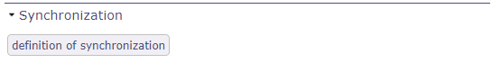
Synchronisation des Tickets avec les Activités¶
Vous activez l’option directement sur le projet. Solution plus flexible qui permettra une grande flexibilité selon les comportements potentiellement différents selon le projet.
Il s’agit d’un lien unique pour éviter les mises à jour récursives. Un Ticket est synchronisé avec une seule Activité et une Activité sera synchronisée avec un seul Ticket (paire unique).
La fonctionnalité de synchronisation définie sur un projet n’est pas héritée par les sous-projets.
Synchroniser les Tickets existants¶
Lorsque cette option est sélectionnée, tous les Tickets non clos dont le statut est supérieur ou égal au statut de déclenchement et dont le type est celui spécifié seront synchronisés avec une Activité.
Si le Ticket est déjà synchronisé avec une Activité, rien ne se passe. C’est le cas de la réactivation d’une règle précédemment désactivée.
Si le Ticket est attaché à une Activité de planification ouverte, le Ticket est synchronisé avec cette Activité.
Si le Ticket provient d’une et d’une seule Activité non clos, il est synchronisé avec cette Activité. Sinon, nous créerons une nouvelle Activité qui sera synchronisée avec le Ticket.
Dans tous les cas de recherche de l’Activité à attacher, nous nous assurons qu’elle n’est pas déjà synchronisée avec un autre Ticket et qu’elle ne provient pas d’un autre Ticket
Lorsqu’un élément Ticket ou Activité est modifié et synchronisé avec un binôme, les modifications de certains champs sont répercutées sur leur binôme :
Nom
Projet
État
Responsable
Produit
Composant
Version produit cible
Version composant cible
Le projet
Lorsque vous modifiez le projet d’un Ticket attaché à une Activité de planification, un contrôle de cohérence vous empêche d’effectuer cette modification car les deux éléments doivent être liés au même projet.
En cas de synchronisation, le contrôle est ignoré et vous pouvez modifier le projet sur l’un des deux éléments, la modification sera répercutée sur l’autre.
Si un Ticket change de projet ou de type avant son état de déclenchement, il n’est pas synchronisé.
Il est alors soumis à la règle du nouveau projet ou du nouveau type.
Un contrôle est effectué pour savoir si le Ticket n’est pas déjà dans l’état de déclenchement pour le nouveau projet ou le nouveau type et pour déclencher la synchronisation dans ce cas.
Si un Ticket change de projet ou de type après son état de déclenchement, il est déjà synchronisé. Il continue d’être synchronisé avec son partenaire selon la règle de son projet d’origine, que son nouveau projet ait une règle de synchronisation ou non.
Le changement de projet du Ticket peut également provenir directement d’une modification sur le Ticket ou d’une modification de son Activité binôme.
La règle est toujours la même : la synchronisation de la paire est maintenue.
Les statuts et le workflow
Lors de certains changements de statut, certains champs peuvent devenir obligatoires et ces champs ne sont pas nécessairement synchronisés. Comme la description ou le résultat.
Dans ce cas, ces champs - non synchronisés - sont automatiquement renseignés s’ils se trouvent dans l’élément en cours de modification.
Si, malgré tout, il y a encore des contrôles invalides pour l’élément à synchroniser, la mise à jour est globalement rejetée avec un message explicite.
Par exemple, la fermeture d’un Ticket associé à une Activité sur laquelle il reste du travail à faire ne devrait pas être effectuée.
Pour que les changements de statut soient cohérents, les workflows entre le Ticket et l’Activité associée doivent être identiques pour éviter les incohérences dans les changements de statut.
Un mécanisme permettra néanmoins de remplacer les règles du workflow pour l’élément qui changera d’état automatiquement.
Essentiel, notamment lors de la création de l’Activité, qui doit être créée directement dans le même état que le Ticket, mais qui sera également appliqué ultérieurement.
Par exemple, si une Activité est passée dans un état qui n’appartient pas au workflow du Ticket, le changement d’état est effectué pour maintenir la synchronisation.
Attention : Cela peut conduire à placer le Ticket dans un état dont il ne peut plus sortir (car il est en dehors de son workflow). Dans ce cas, seul le changement d’état de l’Activité peut débloquer le Ticket.
Le même cas peut se produire sur l’Activité qui serait bloquée suite au changement d’état du Ticket.
Charge de travail
Attacher l’Activité comme Activité de planification du Ticket impactera la charge :
La charge imputée en temps réel au Ticket est enregistrée dans les coûts réels de l’Activité
La charge imputée en temps réel sur le Ticket est automatiquement décrémentée dans les charges restantes de l’Activité
Dans le cas d’éléments synchronisés, vous ne pouvez saisir que la charge réelle sur le Ticket.
Cette charge sera alors correctement comptabilisée sur l’Activité via le mécanisme d’Activité de planification.
Suppression d’un élément synchronisé¶
Lorsqu’un élément Ticket ou Activité est supprimé et synchronisé avec un binôme, un message de confirmation est affiché à l’utilisateur.
Dans ce cas, l’élément associé n’est pas supprimé, mais la synchronisation est supprimée.
Cliquez sur définir la synchronisation pour ouvrir la fenêtre contextuelle.
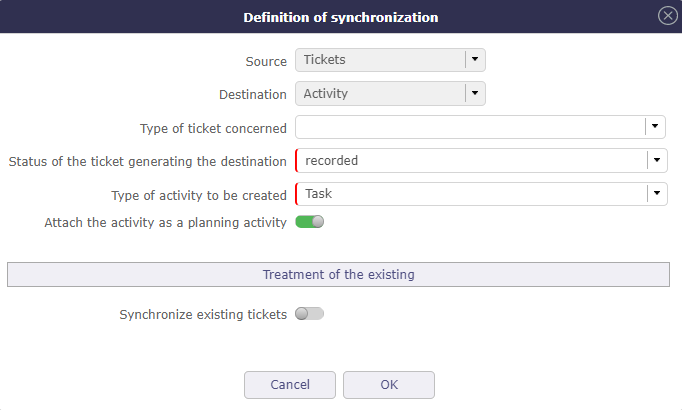
Définition de la synchronisation¶
Lors de l’activation de la fonction sur un projet, une fenêtre contextuelle s’affichera permettant de définir :
Le statut du Ticket générant automatiquement l’Activité
Le type de Ticket concerné (optionnel) - ne pas renseigner pour autoriser tous les types de Tickets
Le type d’Activité à créer
Options
Une option pour déclencher automatiquement l’attachement de l’Activité comme Activité de planification du Ticket
Une option pour synchroniser les Tickets existants
Désactivation de la fonction¶
En cas de désactivation de la fonction au niveau du projet, un contrôle est effectué et alerte l’utilisateur si des Tickets sont synchronisés avec des Activités.
S’il y a des synchronisations en cours, une fenêtre contextuelle s’ouvre pour afficher le nombre de paires existantes, en distinguant le nombre de closes et de non closes.
Si le nombre de paires existantes n’est pas nul, vous pouvez sélectionner les liens existants qui doivent être conservés ou supprimés.
Si les liens sont supprimés, la fonction est complètement désactivée
Si les liens ne sont pas supprimés, la fonction est désactivée uniquement pour les Tickets non encore synchronisés. Les Tickets déjà synchronisés restent synchronisés.
Il n’y a alors plus aucun moyen de supprimer la synchronisation (sauf à supprimer l’un des éléments de la paire).
Vote sur un Ticket¶
Il est possible de voter sur les Tickets. Dans l’onglet de détail de chaque Ticket, trouvez la section de vote. La valeur cible, la valeur actuelle, le nombre de votes et le taux de remplissage sont affichés.
Cliquez sur le bouton de vote pour attribuer un vote sur l’élément sélectionné.

Section de vote¶
Dans la fenêtre de vote, plusieurs informations telles que la limite maximale de points du vote que vous pouvez utiliser sur le vote de l’élément en question.
Votre vote personnel qui n’est pas nécessairement identique aux points maximum que vous pouvez attribuer.
Et enfin le nombre de points qu’il vous reste à dépenser dans la période d’utilisation définie en amont dans les règles d’attribution et d’utilisation des votes.

Fenêtre contextuelle de vote¶
Une fois votre vote validé, si les accès spécifiques dédiés au vote ont été activés, un tableau apparaît pour afficher les noms des votants et les points que chacun d’eux a attribués à l’élément.
Si plusieurs personnes ont voté, le nombre cumulé de leurs points est affiché dans la valeur actuelle.
Vous continuez à voir le nombre de vos points déjà attribués, directement dans le bouton de vote ou dans le tableau si vous avez le droit de le voir.
Dans les accès spécifiques, si l’affichage du tableau est désactivé, vous pouvez afficher au moins les noms des votants.
Dans tous les cas, les noms des votants et les points qu’ils ont attribués sont nécessairement affichés dans le tableau.

Tableau des votes¶